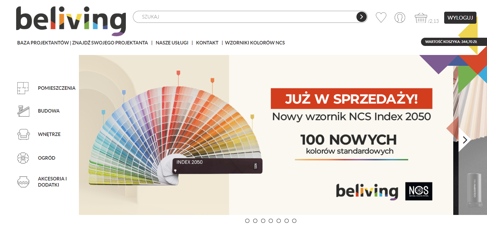
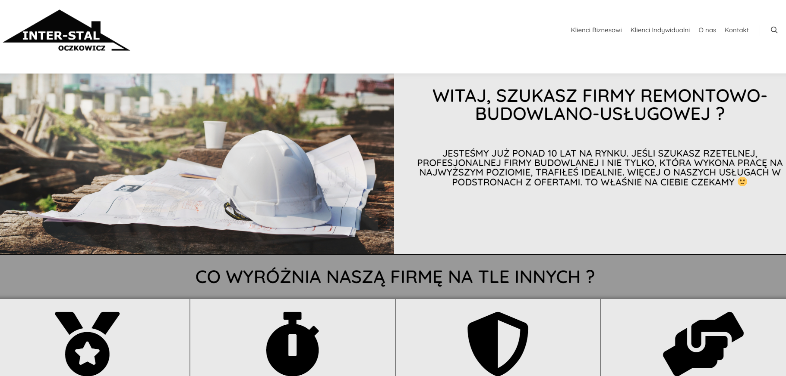

Jestem fullstackem dla tej witryny.
Dokonuję wszelkich niezbędnych zmian w zakresie frontendu i backendu.
Backend serwisu oparty jest na języku PHP i bazie danych MySQL.
Frontend serwisu oparty jest o Bootstrap, Less, JQuery
W tym projekcie poprawiam błędy tych, którzy stworzyli tę stronę.
Testuję responsywność serwisu i weryfikuję jego intuicyjność
- Korzystam z technologii i funkcji: PHP, CakePHP, MySQL, Bootstrap, Less, JQuery

Jestem fullstackem dla tej witryny.
Jestem twórcą tej strony, aktualnie strona jest w przebudowie.
Zmieniam technologie z PHP (WordPress) na C# (ASP .NET).
Dokonuję wszelkich niezbędnych zmian w zakresie frontendu i backendu.
W tym projekcie poprawiam błędy tych, którzy stworzyli tę stronę.
Testuję responsywność serwisu i weryfikuję jego intuicyjność.
- Korzystam z technologii i funkcji: PHP, WordPress, MySQL, Bootstrap, Less, JQuery

Aplikacja internetowa do zamawiania jedzenia, zarządzania daniami restauracyjnymi, zarządzania dostawcami i dostawami
- Korzystam z technologii i funkcji: PHP, Html5, CSS, Bootstrap, JavaScript, Fontello, MySQL, PDO(ORM), mysqli technology (connection + commands)
Backend
Strona Restauracja

Mini aplikacja internetowa do zamawiania jedzenia napisana w technologii ASP.NET CORE, bez intrefejsu graficznego.
- Korzystam z technologii i funkcji: C #, SQL, T-SQL, RestAPI, WebAPI, Entity Framework, NLog